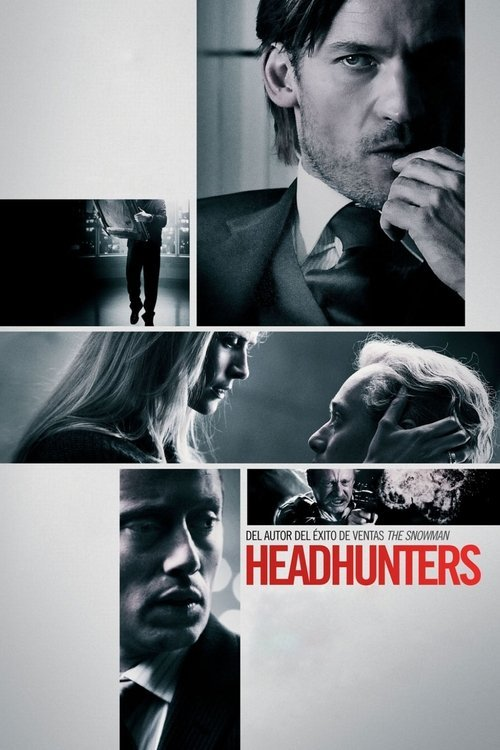

Headhunters (2011)
Sinopsis Rápida
¿Qué pasaría si tu vida perfecta se derrumbara en un instante, construida sobre una red de mentiras y robos cuidadosamente orquestados? Descubre la tensión extrema en Headhunters, un thriller implacable que te dejará sin aliento.
Sinopsis Detallada
Roger, un exitoso cazatalentos con una vida envidiable, esconde un oscuro secreto: vive robando obras de arte para mantener su estilo de vida opulento. Cuando conoce a Clas Greve, un candidato perfecto para un puesto importante y dueño de un cuadro invaluable, Roger planea el golpe de su vida. Sin embargo, este robo se convierte en una espiral de engaños, persecuciones y traición que pondrá en riesgo todo lo que ha construido. La película destaca por su impecable tensión, giros inesperados y un final que dejará a la audiencia boquiabierta. La moralidad queda en entredicho mientras se explora la obsesión por el estatus y las consecuencias de las acciones.
¿Por qué tenés que verla?
- Una trama adictiva que te mantendrá al borde del asiento hasta el final.
- La excelente dirección crea una atmósfera de tensión constante, combinando secuencias de acción con momentos de profunda intriga.
- Headhunters es una película aclamada por la crítica por su inteligente guion y su impactante final.
- Excelente actuación del protagonista.
Idea Extra
Análisis comparativo de la película con otras thrillers psicológicos nórdicos, explorando las temáticas y estilos comunes.